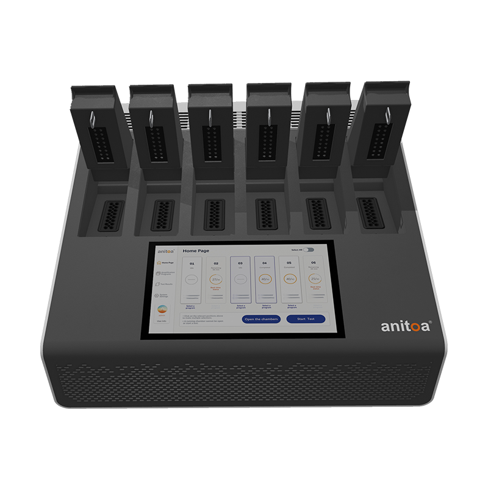
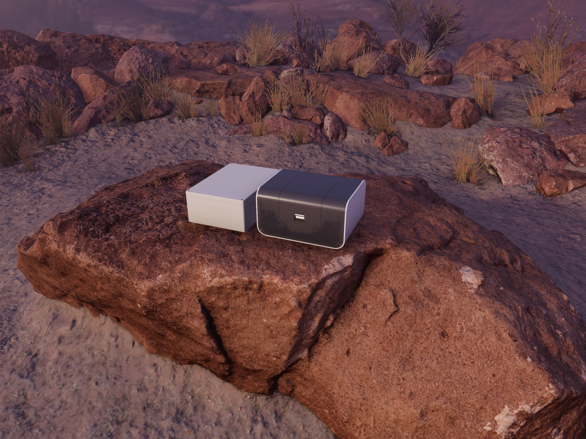

Meet Maverick, an ultra-portable, fast qPCR system that is compatible with standard qPCR assays. Target applications are rapid, on-the-site nucleic acid test of infectious diseases; blood screening; food safety and environmental monitoring.
Maverick features a 4-channel fluorescence optical system based on Anitoa CMOS ULS24 Ultra-low-light biosensor chip. With no internal moving parts, Maverick is rugged and requires no calibration to operate.
Maverick series of qPCR instruments include 4, 8, and 16 well models. MQx16 is a family of 16 well models. A touch screen interface with integrated Wi-Fi is optional for MQx16 models. Anitoa Maverick qPCR Instruments have received US FDA device listing as class 2 510(k) exempt medical devices. All Maverick qPCR models are also CE-IVD certified.
Meet Maverick, an ultra-portable, fast qPCR system that is compatible with standard qPCR assays. Target applications are rapid, on-the-site nucleic acid test of infectious diseases; blood screening; food safety and environmental monitoring.
Maverick features a 4-channel fluorescence optical system based on Anitoa CMOS ULS24 Ultra-low-light biosensor chip. With no internal moving parts, Maverick is rugged and requires no calibration to operate.
Maverick series of qPCR instruments include 4, 8, and 16 well models. MQx8 is a family of 8 well models. Anitoa Maverick qPCR Instruments have received US FDA device listing as class 2 510(k) exempt medical devices. All Maverick qPCR models are also CE-IVD certified.
Meet Maverick FQx4, an ultra-portable, fast qPCR system that is compatible with standard qPCR assays. Target applications are rapid, on-the-site nucleic acid test of infectious diseases; blood screening; food safety and environmental monitoring.
Maverick features a 4-channel fluorescence optical system based on Anitoa CMOS ULS24 Ultra-low-light biosensor chip. With no internal moving parts, Maverick is rugged and requires no calibration to operate.
Maverick series of qPCR instruments include 4, 8, and 16 well models. FQx4 is a family of 4 well models.

Maverick qPCR 96-well moduler high throughput model
Meet Maverick MQx96, a high throughout, flexible and fast qPCR system that is compatible with standard qPCR assays. Target applications are rapid, on-the-site nucleic acid test of with larger number of samples.
Maverick MQx96 features 6 independent bays of 16-well modules, with a 4-channel fluorescence optical system based on Anitoa CMOS ULS24 Ultra-low-light biosensor chip. With no internal moving parts, Maverick is rugged and requires no calibration to operate.
Availability
Maverick MQx96 is coming through 4Q'22. You can email us at info@anitoa.com for more information.
Field Battery Pack for Maverick qPCR

Field battery pack size comparison with MQx8
Field battery pack for Maverick qPCR systems. 60 WH lithum rechargeable battery can provide enough power for up to 10 runs in MQx8 or MQx4 or 6 runs in MQx16.
Download More Information
Availability
Field battery pack for Maverick is available now. You can email us at info@anitoa.com for more information.